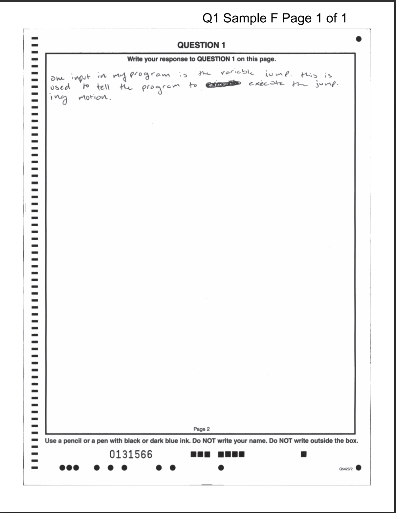
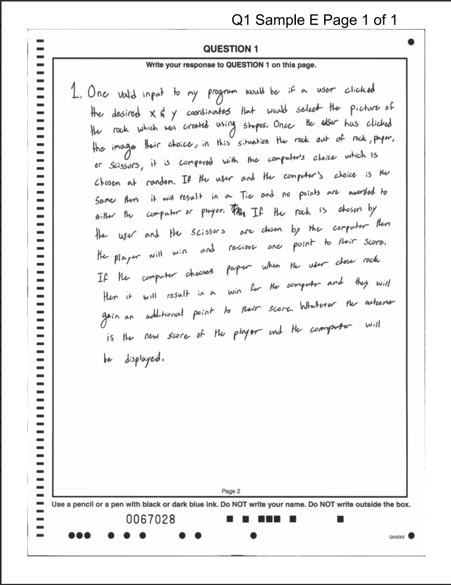
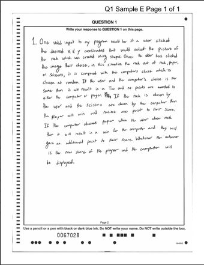

AP Computer Science Principles · Create Task
The Three-Sentence Plan


Both samples answer Question 1 from the 2024 AP CSP exam, Set 1.

Programs accept input to achieve their intended functionality. Describe at least one valid input to your program and what your program does with that input.
One input in my program is the variable jump. This is used to tell the program to execute the jumping motion.
One valid input to my program would be if a user clicked the desired x & y coordinates that would select the picture of the rock which was created using shapes. Once the user has clicked the image of their choice, in this situation the rock out of rock, paper, or scissors, it is compared with the computer's choice which is chosen at random. If the user and the computer's choice is the same then it will result in a tie and no points are awarded to either the computer or player. If the rock is chosen by the user and the scissors are chosen by the computer then the player will win and receive one point to their score. If the computer chooses paper when the user chose rock then it will result in a win for the computer and they will gain an additional point to their score. Whatever the outcome is, the new score of the player and the computer will be displayed.
Follow this pattern of three sentences. Each sentence has its own job.
Reuse the prompt's own words so the scorer can see you answered what was asked.
Explain how your program does it. This sentence often starts with “More specifically,”
Use real values, names, or situations from your program. Start with “For example,”
Explain how you could have or did investigate the intended user of your program to decide the design of your program's user interface.
From Mr. C's Practice Prompts #1
On the next slides, we will build a response to this prompt one sentence at a time. The example program is a pet recommendation quiz for customers at a pet store.
Explain how you could have or did investigate the intended user of your program to decide the design of your program's user interface.
I could have investigated the intended users of my program to decide the design of my program's user interface by interviewing a group of customers at the pet store to find out their preferences.
I could have investigated the intended users of my program to decide the design of my program's user interface by interviewing a group of customers at the pet store to find out their preferences.
More specifically, my user interface gives the user an ‘A’, ‘B’, ‘C’, and ‘D’ option for each question, so the customers could suggest what options would be available to choose from instead of just using the choices I can think up.
More specifically, my user interface gives the user an ‘A’, ‘B’, ‘C’, and ‘D’ option for each question, so the customers could suggest what options would be available to choose from instead of just using the choices I can think up.
For example, the second question is about colors, so if the popular colors of customers at the pet store are yellow, pink, cyan, and black, I could make those the four options when helping to choose a new pet.
Explain how you could have or did investigate the intended user of your program to decide the design of your program's user interface.
I could have investigated the intended users of my program to decide the design of my program's user interface by interviewing a group of customers at the pet store to find out their preferences. More specifically, my user interface gives the user an ‘A’, ‘B’, ‘C’, and ‘D’ option for each question, so the customers could suggest what options should be available to choose from instead of just using the choices I can think up. For example, the second question is about colors, so if the popular colors of customers at the pet store are yellow, pink, cyan, and black, I could make those the four options when helping to choose a new pet.
Consider the procedure identified in part (i) of the Procedure section of your Personalized Project Reference. Describe how this procedure helps manage the complexity of your program.
Write the opening words of all three sentences you would use to answer this prompt.
Consider the procedure identified in part (i) of the Procedure section of your Personalized Project Reference. Describe how this procedure helps manage the complexity of your program.
Consider the list identified in the List section of your Personalized Project Reference. Describe how your program could be written without the use of a list. If it is not possible for your program to work without the use of a list, describe how your program's functionality would be limited.
From the 2024 AP Daily video
Write the opening words of all three sentences you would use to answer this prompt.
Consider the list identified in the List section of your Personalized Project Reference. Describe how your program could be written without the use of a list. If it is not possible for your program to work without the use of a list, describe how your program's functionality would be limited.
Three sentences… and three more sentences, and three more sentences, and three more sentences, and…
Many prompts ask for several things at once. Watch for a list of command words such as “Identify… Explain… Describe…” and for requests joined by “…and…”
Remember that there is no partial credit. If you answer some parts of a prompt but not all of them, the response earns nothing.
So address each part separately and completely, and write three sentences for each part of the prompt.
Consider the procedure identified in part (i) of the Procedure section of your Personalized Project Reference. 1Describe a call to the procedure and 2explain what behavior this call can be used to test in your program.
From the 2024 AP Daily video
The first sentence only sets the scene. The word “and” splits the request into two parts, so this response needs two sets of three sentences.
That adds up to six sentences. The next two slides show a response that follows this plan for the pet quiz program.
A call to my procedure could be point_calc(q1) to tally points for the user's response to a question.
More specifically, when the user responds to question 1 their response is stored in the variable q1, and point_calc is called with the value of their response as the parameter.
For example, q1 could have the value ‘B’, so the call to point_calc(q1) is like calling point_calc('B').
The behavior of this call can be used to test whether the appropriate number of points is added and changes the final pet recommendation.
More specifically, the value of the parameter increases the recommendation points total based on the letter: point_calc('A') should add 4 points, point_calc('B') should add 8, point_calc('C') should add 12, and point_calc('D') should add 16. Then the points total after 4 questions determines the pet recommendation.
For example, answering all the questions with ‘A’ would call point_calc() four times for a total of 16 and recommend a small bird, but if Question 1 is answered ‘B’ the point total should be 20 and recommend a lizard as a pet instead.
Consider the sequence of the algorithm within the procedure included in part (i) of the Procedure section of your Personalized Project Reference. Identify a change to the order of your code that would cause the functionality of the procedure to be different. Describe the change in functionality and explain how that is the result of the code change. If the functionality can not be changed by the order of the code, explain why not.
From Mr. C's Practice Prompts #2
Consider the sequence of the algorithm within the procedure included in part (i) of the Procedure section of your Personalized Project Reference. 1Identify a change to the order of your code that would cause the functionality of the procedure to be different. 2Describe the change in functionality and 3explain how that is the result of the code change. orIf the functionality can not be changed by the order of the code, explain why not.
Plan to write three sets of three sentences. The last sentence of the prompt is a backup: use it only if reordering your code truly cannot change what the procedure does.
Consider the procedure and procedure call identified in parts (i) and (ii) of the Procedure section of your Personalized Project Reference. Describe the outcome that your procedure call is intended to produce. Write a new procedure call with at least one different argument value that will produce the same outcome, if possible, and explain why this procedure call produces the same outcome. If it is not possible to write a new procedure call that produces the same outcome, explain why this is not possible.
From the 2024 AP CSP exam, Set 2
Consider the procedure and procedure call identified in parts (i) and (ii) of the Procedure section of your Personalized Project Reference. 1Describe the outcome that your procedure call is intended to produce. 2Write a new procedure call with at least one different argument value that will produce the same outcome, if possible, and 3explain why this procedure call produces the same outcome. orIf it is not possible to write a new procedure call that produces the same outcome, explain why this is not possible.
Plan to write three sets of three sentences here too. Part 2 is the new call itself, and the sentences around it should show the exact argument values you chose.
…for each part of the prompt!